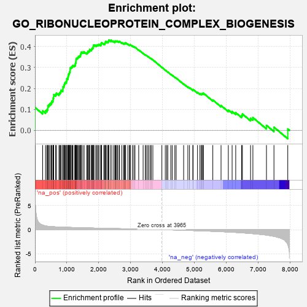
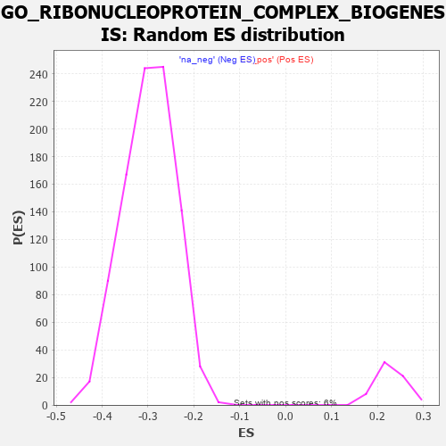

| | | Dataset | 7d |
| Phenotype | NoPhenotypeAvailable |
| Upregulated in class | na_pos |
| GeneSet | GO_RIBONUCLEOPROTEIN_COMPLEX_BIOGENESIS |
| Enrichment Score (ES) | 0.4317447 |
| Normalized Enrichment Score (NES) | 1.891183 |
| Nominal p-value | 0.0 |
| FDR q-value | 0.095395006 |
| FWER p-Value | 0.606 |
Table: GSEA Results Summary

Fig 1: Enrichment plot: GO_RIBONUCLEOPROTEIN_COMPLEX_BIOGENESIS
Profile of the Running ES Score & Positions of GeneSet Members on the Rank Ordered List
| PROBE | GENE SYMBOL | GENE_TITLE | RANK IN GENE LIST | RANK METRIC SCORE | RUNNING ES | CORE ENRICHMENT | | 1 | EIF3J | | | 1 | 7.125 | 0.1088 | Yes |
| 2 | SRSF9 | | | 240 | 0.950 | 0.0928 | Yes |
| 3 | BOP1 | | | 330 | 0.768 | 0.0932 | Yes |
| 4 | RRP15 | | | 372 | 0.722 | 0.0990 | Yes |
| 5 | RPP25 | | | 401 | 0.699 | 0.1061 | Yes |
| 6 | RRP8 | | | 403 | 0.699 | 0.1166 | Yes |
| 7 | RRN3 | | | 438 | 0.667 | 0.1225 | Yes |
| 8 | NIP7 | | | 474 | 0.646 | 0.1279 | Yes |
| 9 | NMD3 | | | 513 | 0.625 | 0.1326 | Yes |
| 10 | WDR12 | | | 530 | 0.620 | 0.1400 | Yes |
| 11 | NLE1 | | | 565 | 0.609 | 0.1450 | Yes |
| 12 | WDR55 | | | 569 | 0.605 | 0.1538 | Yes |
| 13 | DDX56 | | | 584 | 0.600 | 0.1612 | Yes |
| 14 | POP5 | | | 585 | 0.599 | 0.1704 | Yes |
| 15 | NOC2L | | | 647 | 0.578 | 0.1714 | Yes |
| 16 | NOC4L | | | 671 | 0.569 | 0.1772 | Yes |
| 17 | UTP4 | | | 751 | 0.545 | 0.1754 | Yes |
| 18 | CPSF6 | | | 778 | 0.538 | 0.1803 | Yes |
| 19 | GAR1 | | | 806 | 0.530 | 0.1849 | Yes |
| 20 | IMP4 | | | 818 | 0.526 | 0.1916 | Yes |
| 21 | NOL6 | | | 870 | 0.514 | 0.1929 | Yes |
| 22 | WDR75 | | | 874 | 0.513 | 0.2003 | Yes |
| 23 | POP7 | | | 876 | 0.511 | 0.2080 | Yes |
| 24 | NHP2 | | | 906 | 0.505 | 0.2120 | Yes |
| 25 | PRPF3 | | | 917 | 0.503 | 0.2184 | Yes |
| 26 | SF3A2 | | | 928 | 0.500 | 0.2248 | Yes |
| 27 | WDR3 | | | 951 | 0.495 | 0.2296 | Yes |
| 28 | BMS1 | | | 984 | 0.487 | 0.2329 | Yes |
| 29 | NOP9 | | | 993 | 0.485 | 0.2393 | Yes |
| 30 | EIF3F | | | 995 | 0.485 | 0.2466 | Yes |
| 31 | PWP2 | | | 1030 | 0.477 | 0.2495 | Yes |
| 32 | ISY1 | | | 1036 | 0.476 | 0.2562 | Yes |
| 33 | TAF9 | | | 1046 | 0.475 | 0.2623 | Yes |
| 34 | DDX31 | | | 1050 | 0.474 | 0.2691 | Yes |
| 35 | WDR46 | | | 1074 | 0.468 | 0.2733 | Yes |
| 36 | DENR | | | 1084 | 0.467 | 0.2793 | Yes |
| 37 | FCF1 | | | 1100 | 0.463 | 0.2845 | Yes |
| 38 | RRP12 | | | 1102 | 0.463 | 0.2914 | Yes |
| 39 | DDX47 | | | 1103 | 0.463 | 0.2985 | Yes |
| 40 | UTP15 | | | 1135 | 0.457 | 0.3015 | Yes |
| 41 | DDX27 | | | 1163 | 0.452 | 0.3050 | Yes |
| 42 | CLP1 | | | 1182 | 0.450 | 0.3095 | Yes |
| 43 | NSUN5 | | | 1230 | 0.442 | 0.3103 | Yes |
| 44 | WDR36 | | | 1260 | 0.437 | 0.3132 | Yes |
| 45 | CDC73 | | | 1265 | 0.436 | 0.3194 | Yes |
| 46 | EIF3D | | | 1276 | 0.435 | 0.3248 | Yes |
| 47 | NOB1 | | | 1284 | 0.433 | 0.3305 | Yes |
| 48 | UTP18 | | | 1286 | 0.432 | 0.3370 | Yes |
| 49 | DKC1 | | | 1292 | 0.431 | 0.3429 | Yes |
| 50 | UTP25 | | | 1319 | 0.425 | 0.3461 | Yes |
| 51 | SF3A1 | | | 1346 | 0.420 | 0.3492 | Yes |
| 52 | EIF2A | | | 1366 | 0.416 | 0.3531 | Yes |
| 53 | DDX51 | | | 1397 | 0.411 | 0.3555 | Yes |
| 54 | LSM4 | | | 1426 | 0.405 | 0.3581 | Yes |
| 55 | NUP88 | | | 1429 | 0.404 | 0.3641 | Yes |
| 56 | LSM6 | | | 1444 | 0.402 | 0.3684 | Yes |
| 57 | WBP11 | | | 1451 | 0.400 | 0.3738 | Yes |
| 58 | DDX28 | | | 1498 | 0.390 | 0.3738 | Yes |
| 59 | PIN4 | | | 1540 | 0.385 | 0.3745 | Yes |
| 60 | SURF6 | | | 1620 | 0.370 | 0.3700 | Yes |
| 61 | IMP3 | | | 1648 | 0.365 | 0.3722 | Yes |
| 62 | ESF1 | | | 1655 | 0.364 | 0.3769 | Yes |
| 63 | MRM2 | | | 1689 | 0.358 | 0.3782 | Yes |
| 64 | DDX18 | | | 1711 | 0.355 | 0.3809 | Yes |
| 65 | ERCC2 | | | 1712 | 0.354 | 0.3864 | Yes |
| 66 | AGO2 | | | 1767 | 0.343 | 0.3847 | Yes |
| 67 | C1D | | | 1777 | 0.341 | 0.3887 | Yes |
| 68 | STRAP | | | 1793 | 0.339 | 0.3920 | Yes |
| 69 | RPF2 | | | 1814 | 0.335 | 0.3946 | Yes |
| 70 | ERAL1 | | | 1823 | 0.333 | 0.3986 | Yes |
| 71 | LSM2 | | | 1829 | 0.332 | 0.4031 | Yes |
| 72 | DDX52 | | | 1835 | 0.331 | 0.4075 | Yes |
| 73 | UTP20 | | | 1882 | 0.322 | 0.4065 | Yes |
| 74 | EIF3B | | | 1926 | 0.317 | 0.4059 | Yes |
| 75 | TSR1 | | | 1944 | 0.314 | 0.4085 | Yes |
| 76 | HELQ | | | 1982 | 0.307 | 0.4084 | Yes |
| 77 | EIF3L | | | 2005 | 0.304 | 0.4103 | Yes |
| 78 | LUC7L | | | 2060 | 0.297 | 0.4079 | Yes |
| 79 | SF3B1 | | | 2071 | 0.295 | 0.4111 | Yes |
| 80 | DDX49 | | | 2073 | 0.295 | 0.4155 | Yes |
| 81 | SART3 | | | 2084 | 0.293 | 0.4187 | Yes |
| 82 | EIF3G | | | 2155 | 0.284 | 0.4141 | Yes |
| 83 | C1QBP | | | 2189 | 0.278 | 0.4141 | Yes |
| 84 | UTP11 | | | 2195 | 0.277 | 0.4177 | Yes |
| 85 | EFL1 | | | 2207 | 0.276 | 0.4205 | Yes |
| 86 | TFB1M | | | 2212 | 0.275 | 0.4242 | Yes |
| 87 | SRSF1 | | | 2252 | 0.267 | 0.4233 | Yes |
| 88 | AAR2 | | | 2291 | 0.261 | 0.4224 | Yes |
| 89 | NSUN4 | | | 2301 | 0.260 | 0.4253 | Yes |
| 90 | UTP23 | | | 2309 | 0.259 | 0.4283 | Yes |
| 91 | EIF3K | | | 2314 | 0.258 | 0.4317 | Yes |
| 92 | TBL3 | | | 2379 | 0.248 | 0.4274 | No |
| 93 | SLU7 | | | 2382 | 0.248 | 0.4309 | No |
| 94 | NOP16 | | | 2448 | 0.237 | 0.4262 | No |
| 95 | KAT2B | | | 2502 | 0.226 | 0.4229 | No |
| 96 | KRR1 | | | 2504 | 0.226 | 0.4262 | No |
| 97 | RCL1 | | | 2531 | 0.222 | 0.4263 | No |
| 98 | EIF3H | | | 2558 | 0.219 | 0.4263 | No |
| 99 | RIOK1 | | | 2586 | 0.215 | 0.4261 | No |
| 100 | EIF3E | | | 2634 | 0.207 | 0.4233 | No |
| 101 | NOP2 | | | 2648 | 0.206 | 0.4247 | No |
| 102 | DDX1 | | | 2718 | 0.196 | 0.4189 | No |
| 103 | RIOK2 | | | 2775 | 0.187 | 0.4146 | No |
| 104 | ATR | | | 2800 | 0.183 | 0.4143 | No |
| 105 | EIF3I | | | 2806 | 0.183 | 0.4165 | No |
| 106 | EIF3C | | | 2832 | 0.179 | 0.4160 | No |
| 107 | PA2G4 | | | 2840 | 0.177 | 0.4178 | No |
| 108 | RBM5 | | | 2910 | 0.164 | 0.4115 | No |
| 109 | XPO1 | | | 2960 | 0.156 | 0.4076 | No |
| 110 | NOL10 | | | 2975 | 0.154 | 0.4082 | No |
| 111 | RRP1B | | | 2986 | 0.152 | 0.4092 | No |
| 112 | ABCE1 | | | 3051 | 0.143 | 0.4032 | No |
| 113 | CUL4A | | | 3097 | 0.137 | 0.3996 | No |
| 114 | EIF3M | | | 3133 | 0.133 | 0.3971 | No |
| 115 | MRM1 | | | 3250 | 0.114 | 0.3840 | No |
| 116 | DDX3X | | | 3388 | 0.091 | 0.3679 | No |
| 117 | TGS1 | | | 3456 | 0.084 | 0.3606 | No |
| 118 | ERI1 | | | 3486 | 0.079 | 0.3581 | No |
| 119 | LSG1 | | | 3534 | 0.070 | 0.3531 | No |
| 120 | NOP10 | | | 3573 | 0.064 | 0.3493 | No |
| 121 | NOLC1 | | | 3623 | 0.056 | 0.3438 | No |
| 122 | SBDS | | | 3640 | 0.053 | 0.3426 | No |
| 123 | DHX9 | | | 3693 | 0.044 | 0.3366 | No |
| 124 | SF3A3 | | | 3976 | -0.003 | 0.3006 | No |
| 125 | DDX20 | | | 4083 | -0.021 | 0.2874 | No |
| 126 | NOP56 | | | 4128 | -0.028 | 0.2822 | No |
| 127 | DDX17 | | | 4161 | -0.035 | 0.2786 | No |
| 128 | RRS1 | | | 4256 | -0.051 | 0.2674 | No |
| 129 | RAN | | | 4299 | -0.059 | 0.2629 | No |
| 130 | CEBPZ | | | 4382 | -0.073 | 0.2535 | No |
| 131 | EIF2D | | | 4423 | -0.081 | 0.2497 | No |
| 132 | DDX23 | | | 4658 | -0.129 | 0.2217 | No |
| 133 | SRPK2 | | | 4790 | -0.155 | 0.2073 | No |
| 134 | EIF3A | | | 4842 | -0.167 | 0.2033 | No |
| 135 | XRCC5 | | | 4946 | -0.187 | 0.1930 | No |
| 136 | PRKDC | | | 4955 | -0.189 | 0.1949 | No |
| 137 | DDX54 | | | 5093 | -0.222 | 0.1808 | No |
| 138 | NSA2 | | | 5168 | -0.241 | 0.1750 | No |
| 139 | ATM | | | 5210 | -0.249 | 0.1736 | No |
| 140 | DDX21 | | | 5231 | -0.252 | 0.1749 | No |
| 141 | PTEN | | | 5262 | -0.261 | 0.1750 | No |
| 142 | CELF4 | | | 5275 | -0.266 | 0.1775 | No |
| 143 | NVL | | | 5572 | -0.338 | 0.1448 | No |
| 144 | CELF5 | | | 5830 | -0.414 | 0.1183 | No |
| 145 | MAK16 | | | 6058 | -0.493 | 0.0968 | No |
| 146 | PSIP1 | | | 6177 | -0.531 | 0.0898 | No |
| 147 | TRAF7 | | | 6290 | -0.571 | 0.0842 | No |
| 148 | CELF3 | | | 6475 | -0.651 | 0.0706 | No |
| 149 | PTBP2 | | | 6499 | -0.661 | 0.0778 | No |
| 150 | KRI1 | | | 6755 | -0.787 | 0.0572 | No |
| 151 | LYAR | | | 6828 | -0.830 | 0.0607 | No |
| 152 | REXO4 | | | 7253 | -1.126 | 0.0237 | No |
| 153 | XRN2 | | | 7488 | -1.384 | 0.0149 | No |
| 154 | MDN1 | | | 7921 | -3.061 | 0.0064 | No |
Table: GSEA details [plain text format]

Fig 2: GO_RIBONUCLEOPROTEIN_COMPLEX_BIOGENESIS: Random ES distribution
Gene set null distribution of ES for GO_RIBONUCLEOPROTEIN_COMPLEX_BIOGENESIS